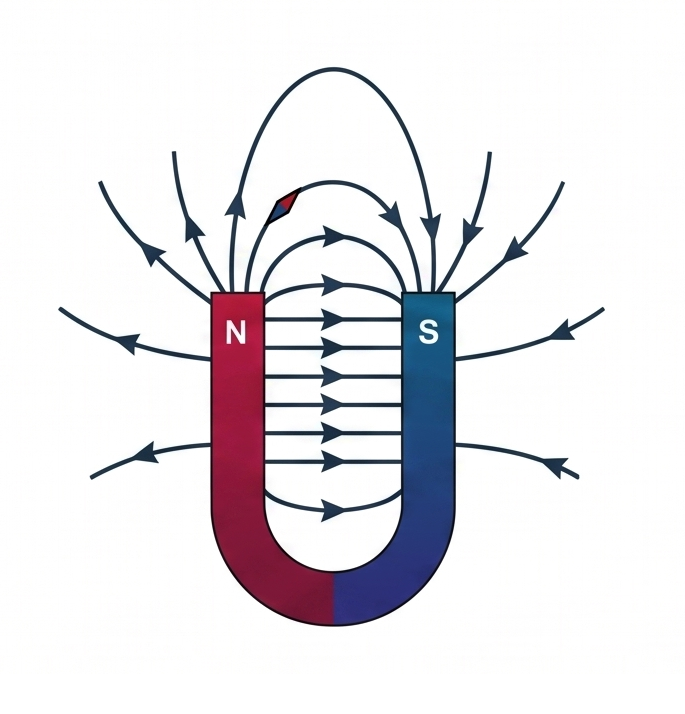

Bài 14: Từ Trường
NỘI DUNG BÀI HỌC
1. Tương Tác Từ
Lực tương tác giữa nam châm với nam châm, giữa nam châm với dòng điện hay giữa dòng điện với dòng điện được gọi là tương tác từ. Lực tương tác đó gọi là lực từ.
Khi đưa một cực của thanh nam châm lại gần một kim nam châm nhỏ (kim la bàn), ta thấy các cực cùng tên đẩy nhau và các cực khác tên hút nhau. Bạn hãy kéo di chuyển thanh nam châm hoặc kim la bàn để quan sát kim la bàn tự xoay định hướng theo lực từ.
Khi đóng công tắc K cho dòng điện $I$ chạy qua dây dẫn đặt song song phía trên kim nam châm, chiều của dòng điện được hiển thị trực quan bằng các mũi tên chuyển động ngay trên dây dẫn. Lực từ của dòng điện lập tức làm kim nam châm bị quay lệch khỏi vị trí ban đầu.
Hai dây dẫn thẳng song song mang dòng điện cùng chiều thì hút nhau; hai dòng điện ngược chiều thì đẩy nhau.
2. Khái Niệm Về Từ Trường
a) Định nghĩa từ trường
Từ trường là một dạng vật chất tồn tại trong không gian bao quanh dòng điện hoặc nam châm, mà biểu hiện cụ thể là sự xuất hiện của lực từ tác dụng lên một nam châm khác hay một dòng điện khác đặt trong không gian đó.
b) Tính chất cơ bản của từ trường
Tính chất cơ bản của từ trường là tác dụng lực từ lên một nam châm hay một dòng điện đặt trong nó.
c) Cách phát hiện từ trường
Dùng kim nam châm thử (kim la bàn nhỏ tự do quay trên trục thẳng đứng). Nơi nào trong không gian có từ trường thì kim nam châm thử đặt tại đó sẽ chịu tác dụng của lực từ làm kim bị quay và định hướng.
Hình 14.1a: Mô hình Kim nam châm thử quay tự do trên trục thẳng đứng
d) Hướng của từ trường
Hướng của từ trường tại một điểm là hướng Nam - Bắc của kim nam châm thử nằm cân bằng tại điểm đó (hướng từ cực Nam sang cực Bắc của kim nam châm thử).
Hình 14.1b: Hướng của từ trường tại một điểm trùng với hướng Nam (S) ➔ Bắc (N) của kim nam châm thử cân bằng
3. Cảm Ứng Từ ($\vec{B}$)
Để đặc trưng cho từ trường về mặt tác dụng lực từ tại một điểm, người ta sử dụng đại lượng vectơ Cảm ứng từ ($\vec{B}$).
Kí hiệu cảm ứng từ:
Vectơ cảm ứng từ được ký hiệu là $\vec{B}$, có độ lớn là $B$.
Đơn vị đo cảm ứng từ:
Trong hệ đo lường quốc tế (SI), đơn vị của cảm ứng từ là Tesla (Ký hiệu: T).
Hướng của cảm ứng từ:
Vectơ cảm ứng từ $\vec{B}$ tại một điểm có hướng trùng với hướng của từ trường tại điểm đó (hướng từ cực Nam $S$ sang cực Bắc $N$ của kim nam châm thử đặt cân bằng tại điểm đó).
Từ trường đều:
Là từ trường mà vectơ cảm ứng từ $\vec{B}$ tại mọi điểm đều bằng nhau (cùng hướng và cùng độ lớn). Các đường sức từ của từ trường đều là những đường thẳng song song và cách đều nhau.

Ví dụ: Từ trường trong lòng giữa hai cực của nam châm hình chữ U hoặc trong lòng ống dây dài có dòng điện chạy qua.
4. Đường sức từ

a) Đặc điểm của đường sức từ
Đường sức từ là đường mô tả từ trường sao cho tiếp tuyến tại mỗi điểm trên đường sức từ trùng với hướng của từ trường tại điểm đó. Chiều của đường sức từ tại một điểm là chiều của từ trường tại điểm đó.
- Qua mỗi điểm trong không gian chỉ vẽ được một và chỉ một đường sức từ.
- Các đường sức từ là những đường cong kín (hoặc vô hạn ở hai đầu). Đối với nam châm, ở ngoài nam châm đường sức từ đi ra từ cực Bắc ($N$) và đi vào cực Nam ($S$).
- Nơi nào từ trường mạnh thì các đường sức từ vẽ dày (dày đặc), nơi nào từ trường yếu thì các đường sức từ vẽ thưa.
b) Cách xác định chiều đường sức từ
Bên ngoài thanh nam châm, các đường sức từ đi ra từ cực Bắc ($N$) và đi vào cực Nam ($S$). Bên trong thanh nam châm, đường sức từ đi từ cực Nam ($S$) sang cực Bắc ($N$) tạo thành các đường cong kín.
Quy tắc nắm bàn tay phải dùng để xác định chiều đường sức từ của dòng điện chạy trong dây dẫn:
Nắm bàn tay phải sao cho ngón cái choãi ra chỉ chiều dòng điện $I$, khi đó chiều khum của bốn ngón tay còn lại chỉ chiều của các đường sức từ xung quanh dây dẫn.
Khum bàn tay phải sao cho bốn ngón tay khum lại chỉ chiều dòng điện $I$ chạy qua các vòng dây, khi đó ngón cái choãi ra chỉ chiều của các đường sức từ bên trong lòng ống dây (hoặc xuyên qua mặt phẳng khung dây).
📌 Tương tác từ: Lực tương tác giữa nam châm với nam châm, giữa nam châm với dòng điện hay giữa hai dòng điện.
📌 Khái niệm Từ trường: Dạng vật chất tồn tại xung quanh nam châm/dòng điện, tác dụng lực từ lên nam châm hay dòng điện khác. Hướng từ trường là hướng Nam-Bắc của kim nam châm thử.
📌 Cảm ứng từ $\vec{B}$: Đơn vị Tesla (T). Từ trường đều có các đường sức từ song song và cách đều nhau.
📌 Đường sức từ: Các đường cong kín tuân theo quy tắc Vào Nam Ra Bắc và Nắm bàn tay phải.